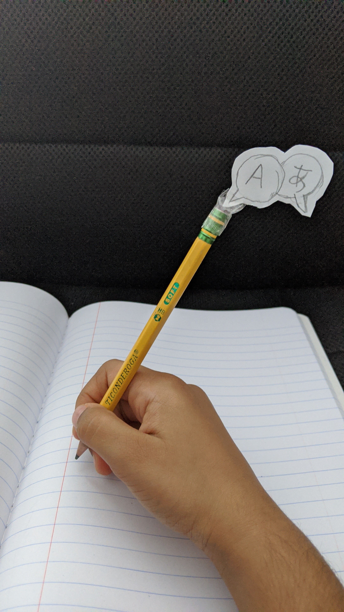

Whether online or public, school supplies are always needed.
These crafts are for customizing your school supplies in a SekaiReizen theme.
Let us start with the first craft.
The first step is to get a notebook. Any notebook is fine. Composition, spiralbound... anything. Also get a piece of paper, ( cut up to fit the size of the notebook) a black pen/marker, and coloring supplies. You can even get some stickers and decorative tape if you like. On the paper, write SekaiReizen in crooked letters, like how a little kid may have written it. Under SekaiReizen, draw a square with a pencil. Erase some parts and make wavy lines, squiggly lines, or zigzag lines. You need to put the squares where the continents on Earth would be. continue erasing and adding lines to your squares. Then on either side of the map you just drew, draw straight lines. Above the SekaiReizen letters, draw two speech bubbles overlapping each other. Write one English letter in one of the speech bubbles and a letter from a different language in the other. This is what will make your notebook different from somebody else's. Color the logo you drew with the colors from the SekaiReizen logo and - there! You are done. You can add the stickers or decorative tape now if you like.
You need to get a pencil. A normal pencil will actually work best, but if you want to get a designed pencil that is perfectly fine. Just do what you like! Take a piece of paper and draw the two speech bubbles overlapping each other. Write the same two letters that you wrote in the speech bubbles on your notebook. Cut it out, and you can color it if you like. Cut a piece of tape and stick the speech bubbles onto the pencil. You are done!
